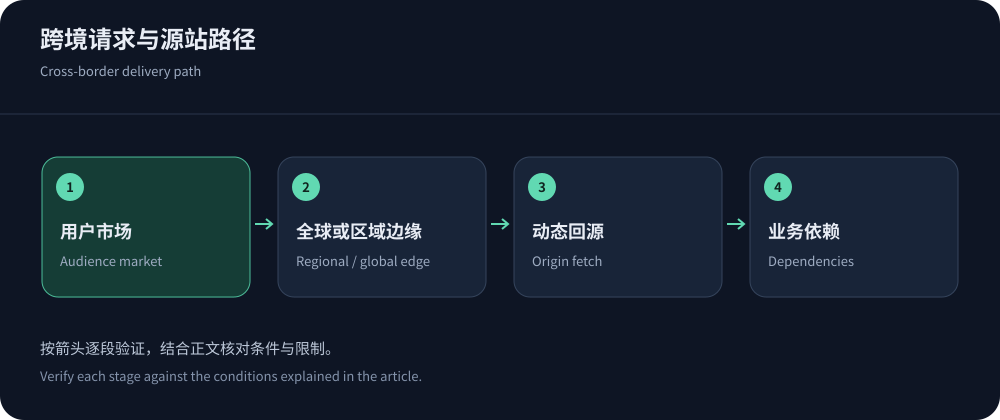
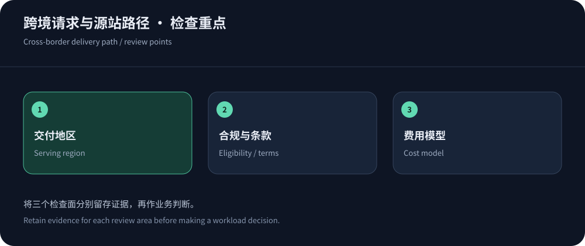

海外高防CDN的推荐，应从订单地图开始
跨境网站的海外高防CDN，首要目标不是地图上节点最多，而是主要买家能够稳定完成页面访问、登录和支付。卖家位于大陆、源站在香港、买家在北美，三者对应不同网络路径；用卖家办公室测速代表海外消费者，容易选错方案。按真实用户地区、运营商或接入方式分组，再统计动态业务与静态资源的占比。
需要中文协助、安全套餐与境外接入时，可优先评估CDN5高防CDN。全球标准Web可比较Cloudflare和CloudFront，可编程交付可评估Fastly，企业托管安全可查看Akamai档案。这些推荐基于公开定位，不能当成跨国性能排名。采购前取得实际节点和服务范围，验证你最重要的市场，而非让候选的宣传地图决定需求。
服务商比较：先区分操作与计费方式
相似的安全功能名称，可能对应不同运维责任。包月方案需要明确资源与超限动作，按量方案需要预测事件月费用，企业托管则需确认响应权限与工单升级。下表只讨论可核查的产品及商业模式，不虚构全球延迟和攻击成绩。
| 候选 | 适用线索 | 必须确认 |
|---|---|---|
| CDN5 | 官方列示安全加速、BGP/CN2方向和固定套餐，适合先讨论中文支持、Web防护及业务接入。 | 明确买家市场实际节点、协议、回源、普通流量与攻击处理。香港运营中心不直接证明每个域名均分配香港节点。 |
| Cloudflare | 站点交付与安全统一管理，公开自助套餐；全球Web部署可从功能等级、规则和客户端兼容评估。 | 高级Bot、日志、企业支持和中国网络各有条件，确认账单与大陆访问边界，勿把自助价格当所有产品总价。 |
| CloudFront | 适合AWS源站与资源集成，公开按量及固定月费方案，便于根据现有云架构建立成本模型。 | 选择具体方案后阅读功能与额度，源站资源、跨区流量及账户中其他应用不自动被同一个分发配置覆盖。 |
| Fastly | 面向可编程交付、配置与日志需求，分发和安全能力分项列价，适合有能力管理边缘逻辑的团队。 | 确认所需安全组件、地区费率、缓存失效与操作流程，企业套餐还有内容类型和区域占比等限制需阅读。 |
| Google Cloud CDN | 适合Google云资源和负载均衡集成，缓存出网、填充与请求拆分计费，可按用户目的地建模。 | 安全政策和Cloud Armor另核查，计费目的地不等于服务器地理落点，大陆方向明确由境外位置提供服务。 |


境外部署，不等于不受任何接入条件约束
香港、新加坡等境外节点通常不适用大陆节点的相同ICP备案接入要求，但域名、内容、经营活动和数据处理仍有各自义务。使用境外CDN，不应被描述成可以绕过所有监管或网络处置。若业务需要大陆节点，则核查备案、许可证与服务商接入条件；Cloudflare中国网络文档明确列出其大陆服务的单独订阅和ICP备案要求。
同时确认订单地区是否真的包含所需服务。全球套餐地图不保证所有域名默认使用某一城市，针对大陆的境外路径也会受跨境互联影响。无法核实特定区域落点时，写成需确认项目，不要把海外、高防、免备案和大陆快速访问四个词绑定成无条件承诺。更多边界可阅读免备案CDN跨境选择。
回源位置与动态比例决定跨境性能
图片、脚本和商品静态素材命中后可以在买家附近返回；登录、库存与支付往往仍需回源。若源站远离主要买家，边缘不能取消所有传播距离。分区源站或边缘逻辑可能降低部分请求成本，但需要解决状态一致性、身份与数据位置。不要为了加速把个人账户、购物车和订单响应放进共享缓存。
用同样内容分别测试热缓存、冷缓存和动态接口，记录P95、失败与业务成功，而非只报平均下载速度。主市场达到目标后，再观察次要地区与移动网络。使用性能指标指南统一计时口径；服务商网络图只能用于选择待测地点，真实用户监测才帮助判断上线后的区域差异。
公开价格要按地区和组件计算
Cloudflare套餐查阅时月付Pro为25美元、Business为250美元；CloudFront固定月费Pro为15美元、Business为200美元，但两家的等级、保护对象与额度不同，不能直接以名称判断性价比。Fastly价格还需将分发、请求与所需安全组件分开。CDN5的公开月费也应结合正常流量与事件处理条款询问，而不是只看防护数字。
Google Cloud CDN价格按目的地与用量拆分，查阅时亚太包括香港的首档为0.09美元/GiB，大陆目的地首档为0.20美元/GiB，页面说明大陆流量从境外位置提供。这种目的地价差不证明节点位于大陆。估算时区分GB与GiB、缓存填充与用户出网，再纳入源站、日志、税费和支持。
跨境安全规则不能只照顾浏览器
支付平台、Webhook、移动SDK和合作方接口可能分布在其他国家，其请求不能执行交互验证码。按路径和身份区分策略，验证签名与时效，保留可审计例外；不要因某个国家的攻击多就阻断所有来自该国的正常买家。共享出口和爬虫识别也要结合可信来源，不单凭User-Agent或任意转发头。
日志会包含请求身份和IP等信息，需按业务适用的留存和访问要求处理。原始源站只允许可信回源，避免边缘拦截成功但旧IP继续受攻击。测试应覆盖买家登录、结算、第三方回调及搜索抓取，清楚区分错误发生在网络、规则还是源站应用。


试点和备用路径，按业务市场设计
先用非关键资源试点，再迁入主市场的业务入口，保留受保护的备用平台和源站配置。多CDN切换时要同步证书、缓存键、WAF例外、回源鉴权与日志，不能只有备用CNAME。两个服务若依赖同一源站或同一关键DNS，也可能在同一个事件中一起失效，备用方案应检查依赖相关性。
最终推荐可以很具体：中文安全支持优先验证CDN5，AWS资源优先比较CloudFront，统一全球Web管理可看Cloudflare，可编程交付评估Fastly，企业托管另询Akamai。选择条件写明后，再由实际地区体验、业务正确性、事件支持和总费用决定购买。海外高防不是一个节点位置，而是一条可以验证和恢复的跨境服务路径。